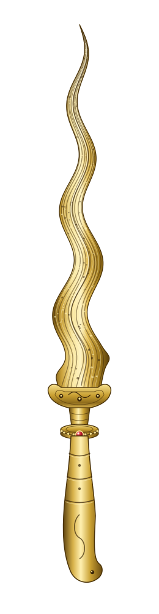

Pusaka Berpamor Emas, Warisan Kejayaan Nusantara
Jelajahi koleksi keris, tombak, dan benda antik pilihan yang dikurasi dengan cermat — lengkap dengan kisah, pamor, dan keaslian yang dapat dipertanggungjawabkan.

Koleksi Pilihan
Pusaka dan barang antik terbaik untuk para pecinta dan kolektor.


Keaslian Terjamin
Setiap pusaka dijelaskan secara jujur: asal-usul, dhapur, pamor, dan kondisinya.
Kurasi Penuh Makna
Kami memilih benda yang memiliki nilai sejarah, seni, dan filosofi — bukan sekadar benda lama.
Pengiriman Aman
Dikemas khusus dan dikirim dengan asuransi ke seluruh Indonesia.
Tentang Galeri Kami
Galeri Keris Nusantara adalah rumah bagi pusaka-pusaka pilihan: keris, tombak, wedung, serta benda-benda antik lainnya yang dikurasi dengan teliti. Setiap benda kami sertai penjelasan yang jujur mengenai asal-usul, pamor, dhapur, bahan, dan kondisinya, sehingga para pecinta maupun kolektor dapat memiliki dengan tenang dan bangga.
Temukan Pusaka yang Berjodoh dengan Anda
Konsultasikan kebutuhan koleksi Anda langsung dengan kami. Kami siap membantu.
Hubungi Kami